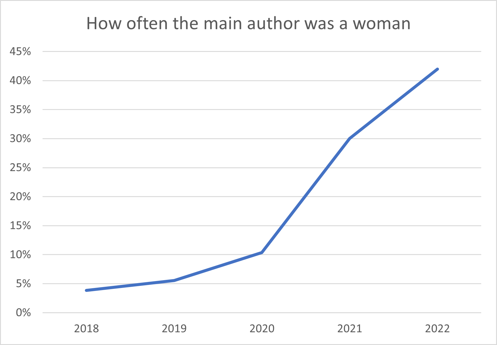
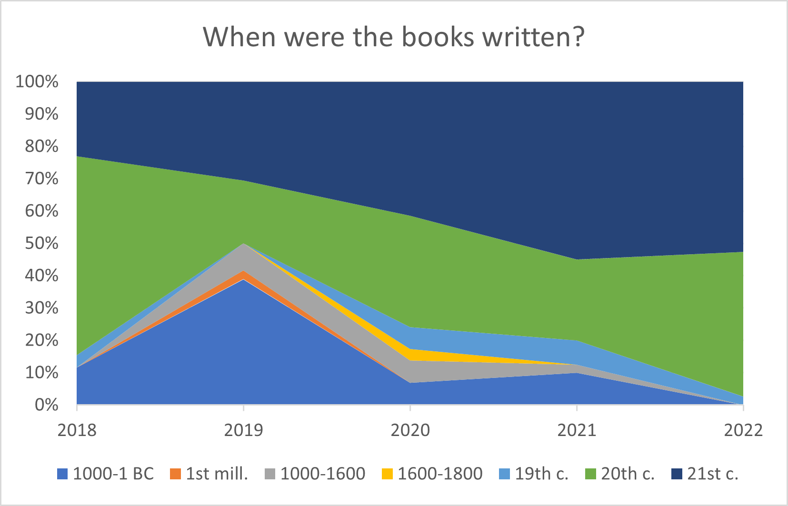
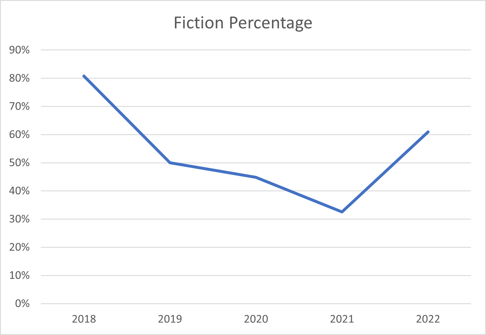
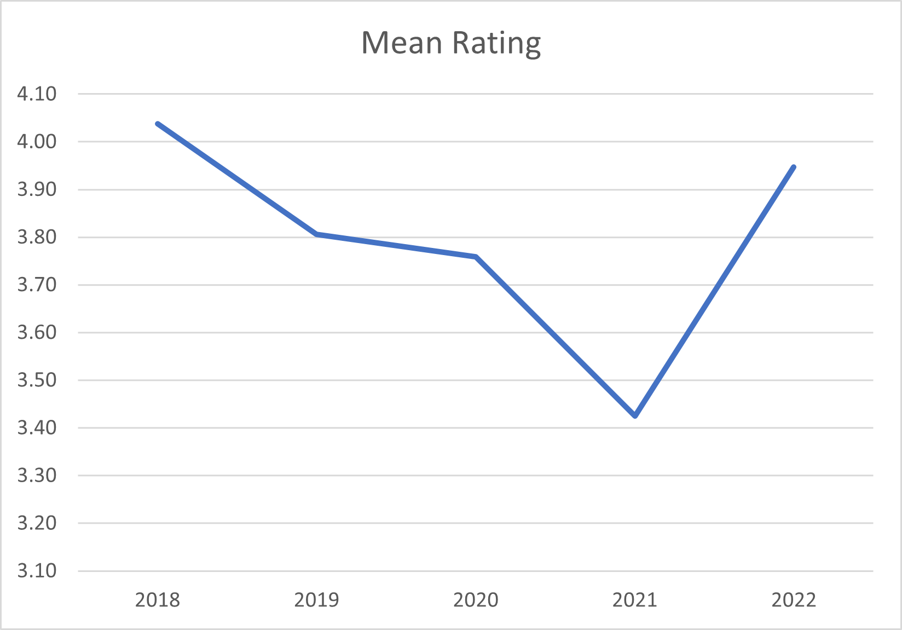
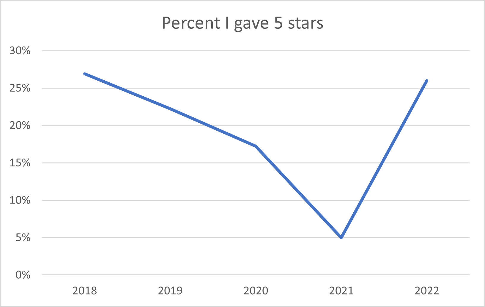
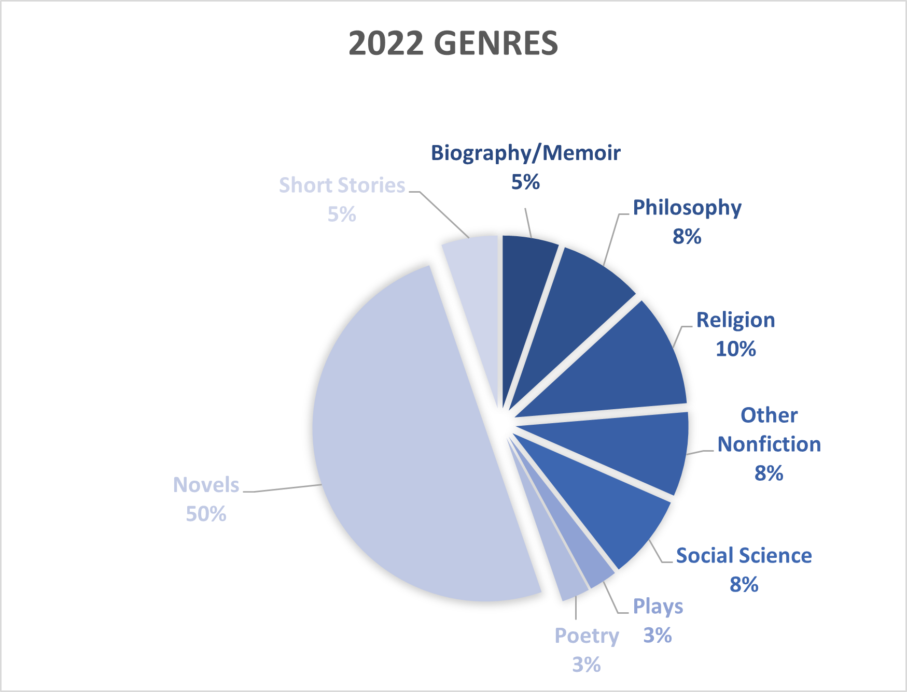

Books Analysis: 2022 Update
Some Background
Since 2018 I have kept track of the books I've read. Last year I analyzed what I had read through 2021 and this page updates that analysis with 2022 data.
I will mostly focus on the changes but the past data will be included again in my charts. But if you want to look at the old one, it's still here.
Last Year's Goals
In January 2022 I set several goals for my reading for the year. Read 40 books, read 40% women authors, reverse the trend of less fiction every year, and read five specific books. Let's see how I did:
Goal 1: Close but not quite. I read 38 books, instead of 40. But hey, if you hit every goal you're aiming too low. Here's a table. (Raw numbers aren't very useful because of length variance. I cracked books this year ranging from a dozen pages to over a thousand.)
| 2018 | 2019 | 2020 | 2021 | 2022 | Total |
|---|---|---|---|---|---|
| 26 | 36 | 29 | 40 | 38 | 169 |
Goal 2: Achieved! I set out to intentionally increase the percentage of books I read that were written by women to >40% because of this Guardian article which essentially showed that "women are prepared to read books by men, but many fewer men are prepared to read books by women."
I do think achieving this goal contributed to my old-book-fraction decrease. It's not an easy problem to solve but I have made a list of a lot of older (pre 20th c.) books with women authors that I intend to reference in 2023.
Goal 3: Achieved with borderline overkill. Because I value the way fiction changes my outlook on life, I was unhappy with the decrease in percent fiction over the years. Actually forget about the overkill thing. I'm happy with where I'm at and don't plan to think about it in 2023.
Goal 4: Not achieved and it wasn't close.
| Title | Author | Status |
|---|---|---|
| Several Dramas | Euripides | Didn't read |
| Devotions upon Emergent Occasions | John Donne | Didn't read |
| Silence | Shusaku Endo | Didn't read |
| The Violent Bear It Away | Flannery O'Conner | In progress |
| The Death of Ivan Ilyich | Leo Tolstoy | Read! |
I am very bad at reading books from even my priority to-read list. ~1.5/5 isn't great.
Other Findings
To start off, lets look at the number of books I read each year. This isn't a very interesting stat, since lengths varied enormously, especially since I count each play as one book (not having any better way of dividing them.)
Last year I noticed and commented on a stark decline in my mean star rating. That finding evidently influenced my 2022 ratings even though I tried to avoid it. Rating may or may not be interesting going forward.
Same story as mean rating. This suggests I read read a lot more books I loved in 2022 than in any year since 2018 and *checks list* that's plausible.
This year's fiction revival was heavily driven by novels. Nonfiction in general took a hit of course, with physical science completely disappearing.
The Future
I'd like to read at least 40 books in 2022. I don't want the number to decrease and 40 in 2021 wasn't a huge burden. I would like to get the percent of the books written by women up to >40%. And I would like to read at least these five things from my waiting list.
1. Dramas by Euripides, at least Medea, Bacchae, and Trojan Women
2. Devotions upon Emergent Occasions by John Donne
3. Silence by Shusaku Endo.
4. The Violent Bear It Away by Flannery O'Conner
5. The Death of Ivan Ilyich by Leo Tolstoy